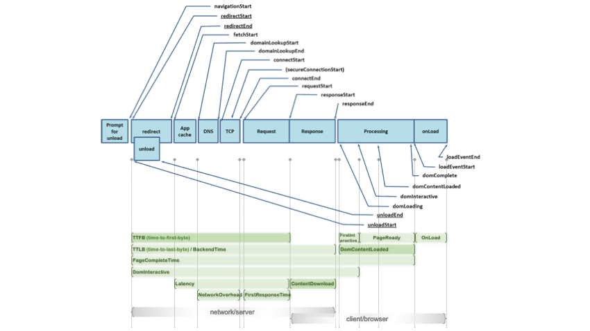

The
W3C Navigation Timing API provides the tools to measure the critical milestones for the main HTML document:
DNS, TCP, request and response, and even DOM-level timing metrics. This API exposes the metrics as accurate and
detailed timing statistics — natively — for page navigation and load events. It's available now in Internet
Explorer 9 - 11, Edge, Google Chrome, Firefox and Safari.
The exact metrics exposed via this API can be found in the
MDN web docs. The amount of timing and events being tracked through this API can be
overwhelming and possibly confusing. To streamline the metrics collection and to simplify analysis, Nexial
implemented a series of
simpler data points via System variables. The image below depicts the mapping
between Nexial supported metrics and W3C's timing events. Click on the image below to open a larger version on a
separate tab.

| System variable |
Description |
nexial.web.metrics.TTFB |
The time, in milliseconds, between the start of user's request to the browser and when the corresponding
response is initially received by the browser.
|
nexial.web.metrics.TTLB |
The time, in milliseconds, between the start of user's request to the browser and the completion of the
corresponding response received (downloaded) by the browser.
|
nexial.web.metrics.BackendTime |
Same as nexial.web.metrics.TTLB. |
nexial.web.metrics.DomInteractive |
The time, in milliseconds, between the start of user's request to the browser and the requested page ready
for user interaction (while the same page might not be completely loaded).
|
nexial.web.metrics.PageCompleteTime |
The time, in milliseconds, between the start of user's request to the browser and the requested page being
completely loaded, parsed and all sub-resources loaded.
|
nexial.web.metrics.Latency |
The time incurred, in millisecond by the browser loading requested data from its cache, or the time
between the browser issuing the request and the corresponding response first received from the server.
|
nexial.web.metrics.NetworkOverhead |
The time incurred, in milliseconds, to complete DNS lookup and open TCP connection by the browser. |
nexial.web.metrics.FirstResponseTime |
The time, in millisecond, to receive initial response since the request was made. |
nexial.web.metrics.ContentDownload |
The time, in milliseconds, between the browser receiving the first and the last byte of the corresponding
response.
|
nexial.web.metrics.ContentDownload |
The time in millisecond between the first and the last byte of response for the current request (i.e.
URL).
|
nexial.web.metrics.DomContentLoaded |
The time, in milliseconds, between receiving the last byte of the response (which subsequently start the
parsing to the document thereof) and the complete construction of the parsed DOM and CSSOM objects.
|
nexial.web.metrics.FirstInteractive |
The time, in milliseconds, to parse the DOM objects. |
nexial.web.metrics.PageReady |
The time, in milliseconds, between the DOM objects being parsed and the corresponding page completely
loaded (i.e. DOM and CSSOM construction complete)."
|
nexial.web.metrics.OnLoad |
The time, in millisecond, taken to executed all the JavaScript load events after the corresponding page is
completely loaded.
|
This API that allows you to collect lifecycle timing information related to resources in a document. It enables
one to measure user latency, which is crucial to benchmark web pages.
Using the Resource Timing API allows us to retrieve and analyze a detailed profile of all the network timing data
for every resource on the page. As such we can use this API to track the performance of the resources of our page,
and determine how many and what resources we have to optimize.
3. **Paint Timing**
First Paint (FP) is the first of these key moments, followed by First Contentful Paint (FCP). These metrics mark
the points, immediately after navigation, when the browser renders pixels to the screen. This is important to the
user because it answers the question: is it happening?
The primary difference between the two metrics is FP marks the point when the browser renders anything that is
visually different from what was on the screen prior to navigation. By contrast, FCP is the point when the browser
renders the first bit of content from the DOM, which may be text, an image, SVG, or even a canvas element.